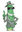
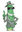

- Nota: Si buscas las solicitudes anteriormente resueltas, están: aquí.
¿Quieres meterte de lleno en La Frikipedia? Esta página te ayudará a hacerlo. Aquí podrás sugerir la creación de Proyectos que ayuden a mejorar la Frikipedia en cantidad y calidad y la creación de Portales para coordinar los artículos de un tema.
Cómo solicitar
Propón tus Proyectos en la sección de proyectos (obviamente) y los Portales en la sección de Portales (gracias, Capitán Obvio). Para hacerlo usa este código:
<li>{{nuevop|usuario|sugerencia|descripción. ~~~~~}}
El campo usuario es tu nombre de usuario, sugerencia es el nombre de tu proyecto o portal (siendo un nombre de Proyecto tal que "Proyecto:Elquesea" y un nombre de Portal "Portal:Elquesea"), descripción una pequeña lista de las cosas que tratarías en tu proyecto/portal y las cuatro virgulillas ~~~~ añaden fecha y hora de la solicitud. Recuerda que las sugerencias que no se hagan siguiendo esta pauta no serán aceptadas.
Cómo saber el veredicto
Los administradores responsables (remarco: los administradores responsables, no los usuarios) se reirán de ti aceptarán (), denegarán () o harán algún comentario antes del veredicto () sobre la creación del Proyecto o Portal en esta misma página, así que no dejes de visitarla para saber si ya eres un dios o diosa y, si no lo eres, porqué no. Sólo en casos extraordinarios se pondrán en contacto contigo directamente por medio de tu página de discusión. De vez en cuando, las solicitudes resueltas se irán archivando.
En esta sección, podrás repasar las reglas de creación de Proyectos para luego poder proponer los tuyos propios.
Reglas generales de los nuevos Proyectos
Unas pocas reglas que todos los nuevo Proyectos deben cumplir:
- Todos los nuevos Proyectos han de aportar algo a la Frikipedia. No tiene sentido crear un proyecto "moluscos del espacio exterior" que se dedique encontrar moluscos que se parecen a extraterrestres y pegar sus fotos. En cambio sirven cosas como "poner infoboxes a los artículos", "categorizar artículos", etc.
- Todos los Proyectos deben tener un plazo de finalización a largo plazo.
- Todos los Proyectos requieren un encargado que se haga responsable de todo aquello ocurrido en su Proyecto y serán los encargados de llevarlo al día y de actualizarlo cuando sea necesario.
- Aquel Proyecto sin encargado o sin encargado activo será adjudicado al usuario que lo solicite siguiendo las instrucciones de Adopción de Proyectos y Portales.
- Es imprescindible tener colaboradores en el Proyecto. La forma de reclutamiento es totalmente libre: puede ser ofreciendo premios, frikiboxes o ideas por el estilo.
- Al que incumpla estas normas, patada en los cojones
Propuestas para nuevos Proyectos
- Cutrupe (disc • contribs • bloquear • reg • reg bloq)
- La Frikipedia:Recurso del día Se trata de ampliar el recurso que ya tenemos como "Imagen del día", actualizarlo de una forma similar a las "Efemérides" que existan 365 Recursos y que se actualicen poco a poco. En el, se mostrará una imagen por dia, y una breve descripción. ¿Qué tiene de diferente?, pues que ya no se tratará solo de la imágen, sino que podremos poner personas, edificios, pueblos, paises, etc... Y en la descripción de qué se trata, para que se entienda por qué representa un recurso "frikipédico". Me he preocupado de construir ya parte del proyecto para que veáis ilustrada la idea. 21:36 31 ago 2012 (CEST)
- AztroCat01 (disc • contribs • bloquear • reg • reg bloq)
- Proyecto:Frikiviajes Bien lo haré corto, como se ve en el nombre, se trata de unas guías frikis, regiones, llegar, dezplazarse, dormir, comprar, trabajar, seguridad, etc., sobre lugares reales en el planeta, afuera del mismo, afuera de las rutas turísticas (Feroe, Antartida, el espacio, etc) y ficticios. (Logo del mismo (2000 × 1699))
AC-01 • Ask the Cat • FG • ¡Únete! 4:57 8 ago 2014 (CEST)
Aquí se podrán leer las reglas de creación de Portales y solicitar su creación en la sección de Propuestas para nuevos Portales.
Reglas generales de los nuevos Portales
Otras pocas reglas muy parecidas a las de los nuevos Proyectos, pero con algunos matices:
- Todos los nuevos Portales, además de que han de aportar algo a la Frikipedia, su título y su temática han de corresponder con el nombre de alguna de las categorías de la Frikipedia.
- Todos los Portales requieren un portero que se haga responsable de todo aquello ocurrido en su Portal. Estos serán los encargados de llevarlo al día y de actualizarlo, junto con sus colaboradores, cuando sea necesario.
- Todo Portal sin portero o sin portero activo, será incluido en la categoría de Portales huérfanos, en la que otro usuario podrá solicitar su adopción.
- Es imprescindible tener colaboradores en el Portal.
- Al que incumpla estas normas, patada en los cojones
Propuestas para nuevos Portales
- zarkaz (disc • contribs • bloquear • reg • reg bloq)
- portal:Religion
- El portal esta abandonado
- Falta de todo un poco Frikiboxes Premios etc
- tengo
buenas ideas para premios etc
- Y porque soy el mas
subnormal que quiere ser portero
- porque tengo buena hortografia
 No reúnes los requisitos mínimos para ser portero. Esta es tu primera edición en la Frikipedia. No sabemos siquiera si eres responsable o un lammer disfrazado de oveja. Gánate tu lugar en la comunidad a base de trabajo y entonces veremos.
No reúnes los requisitos mínimos para ser portero. Esta es tu primera edición en la Frikipedia. No sabemos siquiera si eres responsable o un lammer disfrazado de oveja. Gánate tu lugar en la comunidad a base de trabajo y entonces veremos.  Deje su mensaje 00:35 2 dic 2011 (CET)
Deje su mensaje 00:35 2 dic 2011 (CET)
- Pepino-Man10 (disc • contribs • bloquear • reg • reg bloq)
- Portal:Ciencias ocultas
- Debería crearse para reunir todo lo para-anormal de esta web
- Necesita una navbox que organice todo eso
- Hay que categorizar debidamente también las imagenes rarotas
- No tengo experiencia en portales, pa eso quiero este, para tener experiencia
- Se el suficiente wiki para no hacer chapucillas
- Buenas noches, y bienvenidos a la nave del misterio. Hoy tenemos un caso especialmente intrigante, paranormal, pintoresco...

 
 
 22:28 19 nov 2011 (CET)
22:28 19 nov 2011 (CET)
Lo mismo que el de arriba. Si no hay voluntarios, no hay proyecto. Además la relación costo-beneficio es muy desfavorable: no se justifica el esfuerzo que demanda poner en marcha un Portal por esas tareas que puede realizar cualquiera con buena voluntad. Deje su mensaje 00:35 2 dic 2011 (CET)
- Alpanchito (disc • contribs • bloquear • reg • reg bloq)
- Portal: Tribus Bárbaras
- Crear un portal donde englobar todo lo relacionado sobre tribus bárbaras
- Englobar artículos sobre el tema ya existentes que aún no pertenecen a ningún portal como son los: Suevos, Vikingos, Celta, Visigordos, Lombardos, Huno
- Englobar otros artículos sobre el tema más secundarios como: Atila, Reyes Godos
- Tengo un buen conocimiento sobre el tema, me encantaría poder ahondar sobre el portal y extender la Frikipedia
- Ya hice antaño algunos artículos y ediciones, por lo que tengo experiencia escribiendo artículos
- Me comprometería a buscar colaboradores del portal, con otros Frikipedistas que trabajen en otros portales similares como el de Portal:Historia
- Gracias por su tiempo
 De: La Frikipedia, la enciclopedia extremadamente seria.
De: La Frikipedia, la enciclopedia extremadamente seria.
{kind=link}